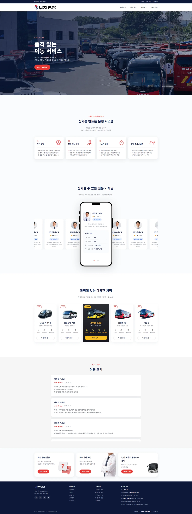
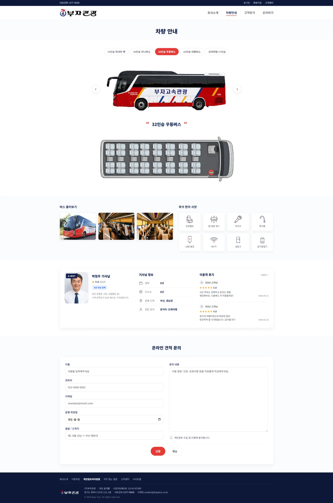
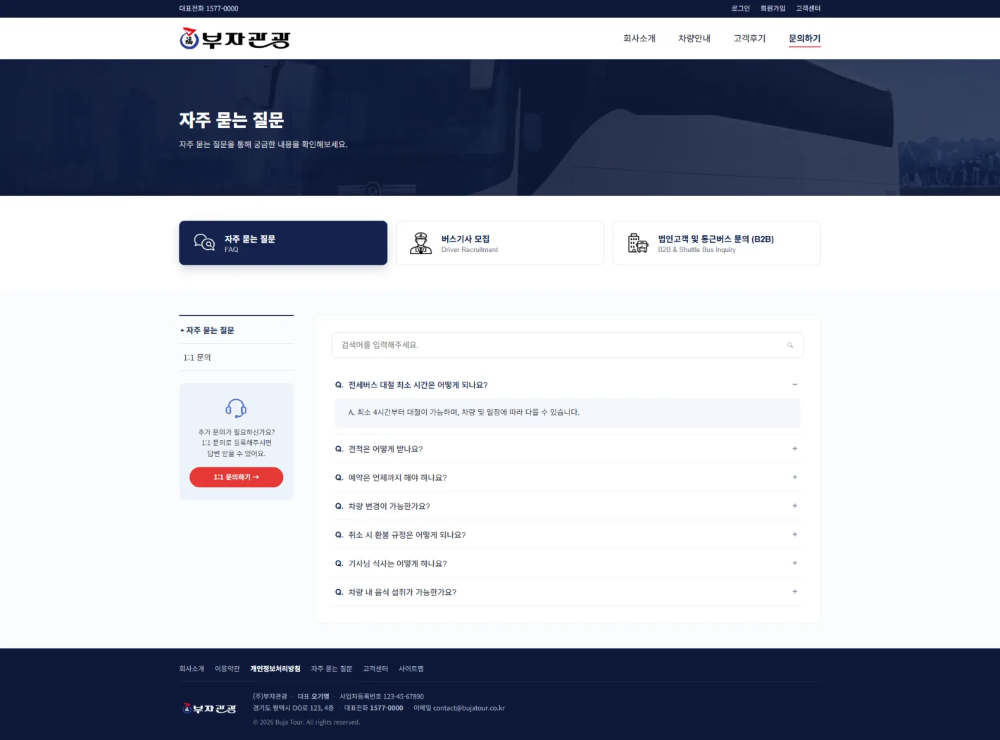
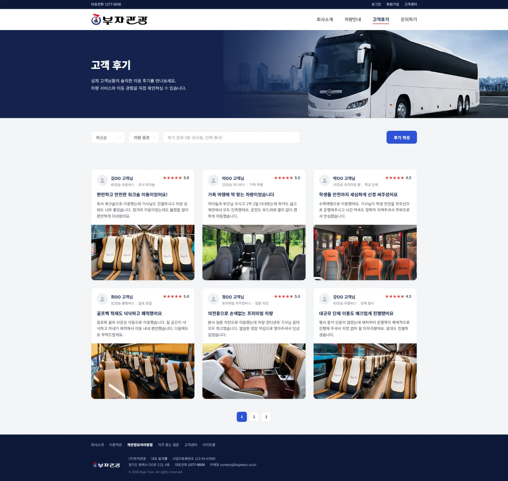

28년 업력의 전세버스 회사 홈페이지를 — 핵심 서비스인 차량 대절이 첫 화면부터 보이고,
문의까지 자연스럽게 이어지도록 다시 설계했습니다.

멀쩡히 ‘있는’ 사이트였지만,
정작 무엇을 하는 곳인지는
웹에서 보이지 않았습니다.
이 프로젝트는 ‘무엇을 더 넣을까’가 아니라 ‘무엇을 먼저 보여줄까’에서 출발했습니다.
리서치부터 IA·UI, 실제 퍼블리싱, 그리고 회사에 전할 영업 제안서까지 한 흐름으로 끌고 갔습니다.
‘무엇을 하는 곳이지?’부터 ‘어떻게 물어보지?’까지 — 매 단계마다 사용자를 멈춰 세우는 지점이 있었습니다.
이탈은 ‘문의 단계’가 아니라
첫인상에서 이미 시작되고 있었다.
전세버스 업체 사이트 5곳을 휴리스틱으로 비교했습니다.
공통점은 첫 화면에서 ‘무엇을’과 ‘바로 문의’를 동시에 보여준다는 점이었습니다.
부자관광은 더 많은 차량과 경력을 가지고도, 웹에서는 그 강점을 더 적게 보여주고 있었습니다.
진단에서 나온 문제를 ‘무엇을 어떻게 바꿀지’로 1:1 매핑했습니다. 더 넣기보다, 순서를 바꾸는 결정이 많았습니다.
진단에서 나온 문제를
화면의 방향으로 다시 정리했습니다.
충분한 차량과 경력을 가진 회사가,
첫 화면부터 핵심 서비스를 전달하고
문의까지 자연스럽게 이어지게 하려면?
사진뿐이던 페이지에
스펙·좌석배치·편의사양과 온라인 견적 폼까지.

깊숙이 분리됐던 일반 양식을 FAQ·기사모집·법인(B2B)으로 분기되는 문의 허브로.

모든 페이지가 결국 ‘차량 대절 문의’ 한 곳을 향하도록 설계했습니다.
서비스·신뢰·차량·CTA를 한 흐름에
스펙·좌석·견적을 한 화면에

필터·평점 있는 실고객 후기
FAQ·기사모집·B2B 분기 허브
학습 프로젝트로 끝내고 싶지 않았습니다. 리디자인의 근거와 기대 효과를 정리해,
회사가 실제로 검토할 수 있는 영업 제안서로 만들었습니다.
‘왜 바꿔야 하는가’를 설득하는 문서까지가 이 프로젝트의 끝이었습니다.
↑ 회사에 실제로 전달한 영업 제안서와 메일.
이 프로젝트는 팀으로 시작했습니다.
가장 어려웠던 건 디자인이 아니라, 같은 결과를 향해 서로의 ‘노력의 농도’를 맞추는 일이었습니다.
초반에는 팀을 잘 이끌어보려 했습니다. 리서치 결과를 공유하고, 문제 정의와 화면 구조를 함께 합의하고, 각자 맡을 영역을 나눴습니다.
모두가 같은 그림을 보고 있다고 믿었습니다.
“좋은 결과를 함께 만들고 싶다” — 그게 출발점이었습니다.
진행될수록, 같은 목표를 보면서도 거기에 들이는 에너지의 농도가 서로 다르다는 걸 알게 됐습니다.
누군가를 탓하기보다, 프로젝트가 멈추지 않게 하는 게 먼저였습니다.
그래서 비는 부분을 메우는 방식을 택했습니다. 공통으로 쓸 화면 구조와 컴포넌트를 먼저 정리해 두니, 각자가 손대기 쉬워졌고 합치는 비용도 줄었습니다.
마무리 단계에서는 결국 흩어진 조각을 하나의 완성된 결과로 묶는 일을 제가 맡아 끝까지 가져갔습니다.
기획과 UI를 다듬고, 실제 화면을 직접 퍼블리싱해 ‘돌아가는 결과물’로 만들었습니다.
그 과정에서 욕심을 더 내, 디자인을 넘어 회사에 실제로 제안할 수 있는 영업 제안서까지 만들었습니다.
학습 프로젝트를 ‘쓸 수 있는 제안’으로 끌어올리고 싶었습니다.
리딩은 ‘끌고 가는 것’이 아니라,
남이 손대기 쉽게 판을 깔아두는 것에 가깝다는 걸 배웠습니다.
통제하려 할수록 멈췄고, 구조와 기준을 먼저 만들어 두니 비로소 굴러갔습니다.
혼자 끝낸 경험이 아니라, 책임의 무게와 협업의 설계를 같이 배운 시간으로 남았습니다.
차량·경력·신뢰라는 강점을 첫 화면부터 ‘순서대로’ 드러냈을 뿐입니다.
그 작은 차이가 ‘무엇을 하는 곳인지’를 즉시 전하고, 문의까지의 길을 짧게 만듭니다.
진입 즉시 ‘무엇을 하는 곳’인지 이해되고, 탐색에서 문의까지 끊김 없는 동선을 만들었습니다.
신뢰 요소로 문의 결정의 부담을 낮췄습니다.
리서치·IA·UI를 넘어 실제 퍼블리싱과 영업 제안서까지,
‘기획부터 전달’을 한 사람의 손으로 완결했습니다.
가장 큰 난관은 디자인이 아니라 협업이었습니다.
통제 대신 구조와 기준을 먼저 깔아두는 것이 팀을 움직인다는 걸 몸으로 배웠습니다.
역할의 ‘농도’를 초반에 합의하고, 진행 상태를 더 자주 가시화하는 장치를 두겠습니다.
끝까지 책임지되, 혼자 짊어지지 않도록.
서비스가 먼저 보이는
첫 화면을 위해.